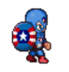
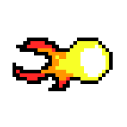

4 Training Recommendations
The Game Jam is not easy. The tight time constraints require competitors to have a high level of mastery over various aspects of game design.
Mastery is the key word here. It is not enough to have simply "been exposed" to some concept. That is familiarity – not mastery.
The training program given here is intended to give students mastery over the skills needed to excell at the Scholastic Game Jam.
It is also intended to be fun! Mastery require repetition. Mastery requires holding oneself to high standards. Sometimes it can be a challenge to keep having fun while pursuing mastery. The following curriculum is intended to keep the road to mastery as fun as possible.
At the end of the day, though, the main ingredient to fun is the energy of the coach. If you’re a coach, whether you follow these recommentations or not, keep in mind that if you’re excited about the Game Jam, your competitors will be too. If you’re excited about your competitors’ assendency to mastery, they will be too.
Be loud. Be proud. Be a coach.
4.1 Training Katas
Coaches will train competitors by helping them acquire the necessary skills to excel at the Game Jam competition. Competitors who have mastered these skills will earn katas. These katas serve as visual, wearable representations of a competitor’s hard work.
Kata key:
 - Meta Katas - for skills related to excelling as a Game Jam competitor.
- Meta Katas - for skills related to excelling as a Game Jam competitor.
 - Avatar Katas - for skills related to creating avatars
- Avatar Katas - for skills related to creating avatars
- Food Katas - for skills related to creating food items
 - Coin Katas - for skills related to creating coin items
- Coin Katas - for skills related to creating coin items
 - NPC Katas - for skills related to creating NPCs
- NPC Katas - for skills related to creating NPCs
 - Recipe Katas - for skills related to creating recipes
- Recipe Katas - for skills related to creating recipes
4.1.1 Intro Katas
We recommend students earn these Intro Katas before earning any other ones. They help reinforce team values and help orient the competitors toward the challenges that face them.
 Core Values Kata (1 minute.)
Core Values Kata (1 minute.)
Hand motions can make these easier to remember and repeat. For example: ’It’s not about my code.’ Point to computer. ’It’s about what I can code.’ Point to brain.
Teaching Tip: Depending on the size of your class, you may want to challenge them to rattle these off 1 by 1, in pairs or small groups, or as an entire class.
Can recite the first two ThoughtSTEM core values
It’s not about my code. It’s about what I can code.
It’s not about me. It’s about us.
 Game Jam Specs Kata (1 minute.)
Game Jam Specs Kata (1 minute.)
Can recite the specs for the upcoming Game Jam.
Teaching Tip: This is a good kata to learn as a team or in small groups.
Game Type: Survival Game
Time Limit: 1 hour
- Categories:
Avatar: 20 points
Coin Items: 25 points
Food Items: 25 points
Non-Player Characters: 30 points
Crafting: 55 points
This kata should be re-earned any time the specs change. Or any time there’s a new upcoming jam. The specs do change from time to time. (And that in itself is a valuable lesson.)
Kata Kata (1 minute.)
This kata might be too many "repeat after me" katas. Feel free to share the info more informally.
Can recite answer to: What is a Kata?
Calmly
Quickly
Accurately
Racket Kata (5 minutes)
Teaching Tip: Start with all the code projected/written on the board. Remove the lines one by one, testing the students each time.
Within five minutes, the student can translate an English sentence of this type:
Make a red circle that is 80 pixels across.
To code of this type:
#lang racket (require 2htdp/image) (circle 80 'solid 'red)
Note: To award this kata, a student should be able to do the above in under 5 minutes. But doing it once is too easy. The student should do this multiple times with different shapes: e.g. blue square, green star, etc.
4.1.2 Avatar Katas - (Day 2)
Teaching Tip: Start class reciting the first two ThoughtSTEM core values.
 Paper Avatar Kata (1 minute.)
Paper Avatar Kata (1 minute.)
Can recite the amount of points they get from an Avatar in their game.
Teaching Tip: This is a good kata to learn as a team or in small groups.
- Avatar points:
Having an avatar 1 points
Any avatar within 5 minutes (Sprint Bonus) 5 points
- Avatar animation frame 1 points
Maximum 4 animations
 Bronze Avatar Kata (5 minutes)
Bronze Avatar Kata (5 minutes)
Within five minutes, the student can translate an English sentence of this type:
Make a game that has an avatar in it.
To code of this type:
#lang ts-game-jam-1 (survival-game #:avatar (custom-avatar))
 Silver Avatar Kata (5 minutes)
Silver Avatar Kata (5 minutes)
Within five minutes, the student can translate an English sentence of this type:
Make a game that has a red circle that is 80 pixels across as an avatar.
To code of this type:
#lang ts-game-jam-1 (define (my-avatar) (custom-avatar #:sprite (circle 20 "solid" "red"))) (survival-game #:avatar (my-avatar))
 Gold Avatar Kata (5 minutes)
Gold Avatar Kata (5 minutes)
Not including drawing time, but do include exporting time.
Within five minutes, the student can translate an English sentence of this type:
Make a game that has a custom image as an avatar.
To code of this type:
#lang ts-game-jam-1
(define (my-avatar) (custom-avatar #:sprite )) (survival-game #:avatar (my-avatar))
4.1.3 Coin Katas - (Day 3)
 Paper Coin Kata (1 minute.)
Paper Coin Kata (1 minute.)
Can recite the amount of points they get from coin items in their game.
- Coin points:
Each coin item 1 point, max 10
Any coin within 15 minutes (Sprint Bonus) 5 points
For each coin item matching theme 1 point, max 10
Bronze Coin Kata (5 minutes)
Within five minutes, the student can translate an English sentence of this type:
Make a game that has an avatar and a coin.
To code of this type:
#lang ts-game-jam-1 (survival-game #:avatar (custom-avatar) #:coin-list (list (custom-coin)))
 Silver Coin Kata (5 minutes)
Silver Coin Kata (5 minutes)
Within five minutes, the student can translate an English sentence of this type:
Make a game that has an avatar and a coin worth 500 points.
To code of this type:
#lang ts-game-jam-1 (define (my-coin) (custom-coin #:value 500)) (survival-game #:avatar (custom-avatar) #:coin-list (list (my-coin)))
 Gold Coin Kata (5 minutes)
Gold Coin Kata (5 minutes)
Within five minutes, the student can translate an English sentence of this type:
Make a game that has an avatar, and a coin with a custom sprite, name, value, and amount in world.
To code of this type:
Teaching Tip: The order of the keywords does not matter.
#lang ts-game-jam-1 (define (my-coin) (custom-coin #:sprite copper-coin-sprite #:name "copper coin" #:value 500 #:amount-in-world 20)) (survival-game #:avatar (custom-avatar) #:coin-list (list (my-coin)))
Students should run the function (show-coin-sprites) on the interactions window to see a list of coin sprites.
 Platinum Coin Kata (5 minutes)
Teaching Tip: As with any kata, there is not a "daily number of required katas", so you can always leave off a kata or return to it another day.
Within five minutes, the student can translate an English sentence of this type:
Make a game that has an avatar, and more than one coin with a custom sprite, name, value, amount in world, and respawn value.
To code of this type:
Teaching Tip: Any mix of keywords here is okay, as long as they all have the required sprite and name, and at least one of them does not respawn.
#lang ts-game-jam-1 (define (my-coin) (custom-coin #:sprite copper-coin-sprite #:name "copper coin")) (define (special-coin) (custon-coin #:sprite bat-sprite #:name "bat coin" #:value 1000 #:amount-in-world 1 #:respawn? #f)) (survival-game #:avatar (custom-avatar) #:coin-list (list (my-coin) (special-coin)))
4.1.4 Food Katas - (Day 4)
 Paper Food Kata (1 minute.)
Paper Food Kata (1 minute.)
Can recite the amount of points they get from food items in their game.
- Food points:
Each food item 1 point, max 10
Any food within 15 minutes (Sprint Bonus) 5 points
For each food item matching theme 1 point, max 10
 Bronze Food Kata (5 minutes)
Bronze Food Kata (5 minutes)
Within five minutes, the student can translate an English sentence of this type:
Make a game that has an avatar, a coin, and a food item.
To code of this type:
#lang ts-game-jam-1 (survival-game #:avatar (custom-avatar) #:coin-list (list (custom-coin)) #:food-list (list (custom-food #:amount-in-world 10)))
 Silver Food Kata (5 minutes)
Silver Food Kata (5 minutes)
Within five minutes, the student can translate an English sentence of this type:
Make a game that has an avatar, a coin, and a food that heals by 20 points.
To code of this type:
#lang ts-game-jam-1 (define (my-food) (custom-food #:amount-in-world 2 #:heals-by 20)) (survival-game #:avatar (custom-avatar) #:coin-list (list (custom-coin)) #:food-list (list (my-food)))
 Gold Food Kata (5 minutes)
Gold Food Kata (5 minutes)
Within five minutes, the student can translate an English sentence of this type:
Make a game that has an avatar, a coin, and a food item with a custom sprite, name, amount in world, and healing power.
To code of this type:
Teaching Tip: Remember, the order of the keywords does not matter.
#lang ts-game-jam-1 (define (my-food) (custom-food #:sprite apple-sprite #:name "apple food" #:amount-in-world 2 #:heals-by 20)) (survival-game #:avatar (custom-avatar) #:coin-list (list (custom-coin)) #:food-list (list (my-food)))
Students should run the function (show-food-sprites) on the interactions window to see a list of food sprites.
 Platinum Food Kata (10 minutes)
Platinum Food Kata (10 minutes)
Teaching Tip: Remember, there is no number of "required" katas by day.
Within five minutes, the student can translate an English sentence of this type:
Make a game that has an avatar, a coin, and more than one food item with a custom sprite, name, amount in world, healing power, and respawn value.
To code of this type:
Teaching Tip: Any mix of keywords here is okay, as long as they all have the required sprite and name, and at least one of them does not respawn.
#lang ts-game-jam-1 (define (my-food) (custom-food #:sprite apples-sprite #:name "apple" #:amount-in-world 2 #:heals-by 20)) (define (special-food) (custom-food #:sprite salad-sprite #:name "salad food" #:amount-in-world 1 #:heals-by 50 #:respawn? #f)) (survival-game #:avatar (custom-avatar) #:coin-list (list (custom-coin)) #:food-list (list (my-food) (special-food)))
4.1.5 NPC Katas - (Day 5)
Teaching Tip: NPC is short Non-Player Character.
 Paper NPC Kata (1 minute.)
Paper NPC Kata (1 minute.)
Can recite the amount of points they get from NPCs in their game.
- NPC points:
Each NPC item 1 point, max 5
Any NPC within 20 minutes (Sprint Bonus) 5 points
For each NPC item matching theme 1 point, max 5
For each line of NPC dialog 1 point, max 20
For each line of dialog matchin theme 1 point, max 20
 Bronze NPC Kata (5 minutes)
Bronze NPC Kata (5 minutes)
Within five minutes, the student can translate an English sentence of this type:
Make a game that has an avatar, a coin, a food item, and an NPC.
To code of this type:
#lang ts-game-jam-1 (survival-game #:avatar (custom-avatar) #:coin-list (list (custom-coin)) #:food-list (list (custom-food #:amount-in-world 10)) #:npc-list (list (custom-npc)))
 Silver NPC Kata (5 minutes)
Silver NPC Kata (5 minutes)
Within five minutes, the student can translate an English sentence of this type:
Make a game that has an avatar, a coin, a food, and an NPC that has a custom name, walking mode, and starting tile.
Teaching Tips: The tiles are numbered from 0 to 8 (0 being the top-left tile). The walking modes are: pace, wander, still, and follow.
To code of this type:
#lang ts-game-jam-1 (define (my-npc) (custom-npc #:name "Sara" #:mode 'wander #:tile 4)) (survival-game #:avatar (custom-avatar) #:coin-list (list (custom-coin)) #:food-list (list (custom-food #:amount-in-world 10)) #:npc-list (list (my-npc)))
 Gold NPC Kata (5 minutes)
Gold NPC Kata (5 minutes)
Within five minutes, the student can translate an English sentence of this type:
Make a game that has an avatar, a coin, a food item, and a NPC with a custom name, walking mode, starting tile, and dialog.
To code of this type:
#lang ts-game-jam-1 (define (my-npc) (custom-npc #:name "Sara" #:mode 'wander #:tile 4 #:dialog (list "Why, hello there!" "Gotta go now!"))) (survival-game #:avatar (custom-avatar) #:coin-list (list (custom-coin)) #:food-list (list (custom-food #:amount-in-world 10)) #:npc-list (list (my-npc)))
 Platinum NPC Kata (10 minutes)
Platinum NPC Kata (10 minutes)
Teaching Tip: Remember, there is no number of "required" katas by day.
Within five minutes, the student can translate an English sentence of this type:
Make a game that has an avatar, a coin, a food item, and more than one NPC.
To code of this type:
Teaching Tip: Any mix of keywords here is okay.
#lang ts-game-jam-1 (define (my-npc-1) (custom-npc #:name "Sara" #:mode 'wander #:tile 4 #:dialog (list "Why, hello there!" "Gotta go now!"))) (define (my-npc-2) (custom-npc #:name "Sonny" #:tile 6 #:mode 'pace)) (define (my-npc-3) (custom-npc #:name "Jason" #:mode 'follow)) (survival-game #:avatar (custom-avatar) #:coin-list (list (custom-coin)) #:food-list (list (custom-food #:amount-in-world 10)) #:npc-list (list (my-npc-1) (my-npc-2) (my-npc-3)))
<Katas>
NPC: 5 minutes, 2.5 minutes
Recipes: 5 minutes, 2.5 minutes
<Sprint Badges>
Under 5 minutes: avatar + Food
Under 10 minutes: avatar + Food + Coin
Under 15 minutes: avatar + Food + Coin + NPC
Under 15 minutes: avatar + Food + Coin + NPC + Recipe
<x10 Badges>
Under 5 minutes: 10 different NPCs
Under 5 minutes: 10 different Coin Items
Under 5 minutes: 10 different Food Items
Under 5 minutes: 10 different Recipes
Under 10 minutes: 10 different Recipes in a tree
Note that these badges must be "refreshed". You don’t get to keep them if you’re not practicing...
4.1.6 Collaboration Badges
<Teaching badges>
* A badge for how you help someone else earn a badge.
For any badge above, if you have already earned it and you’ve earned the teaching badge, you can get a badge for helping someone earn a badge.
4.1.7 Competition Badges
<Practice Jam Badges>
Do a 1 hour game jam. Do a 1 hour game jam. Get __ points. Do a 1 hour game jam. Get __ points. Do a 1 hour game jam. Get __ points.
<Compete in a real game Jam>
1st Competition 2nd Competition 3rd Competition 4th Competition 5th Competition ...
TODO: Somewhere, say something about doing a coding phase and an art phase...